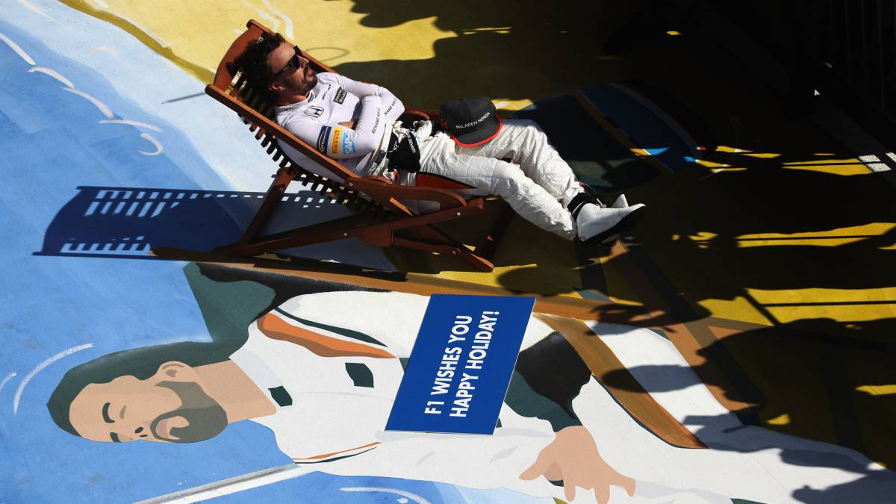

Palmares
Formula 1
- Debuta:2001 Minardi
- Victorias:3 victorias
- Campeonatos:2 (2005, 2006)
- Carreras:6 Horas de Shanghai
- Victorias:32
- Poles:22
- Vueltas rápidas:23
- Puntos:1899
WEC
- Bélgica 2018:6 Horas de Spa-Francorchamps
- Francia 2018:24 Horas of Le Mans
- WEC 2018:Campeón del mundo de Resistencia
- EEUU 2019:24 Horas de Daytona
- EEUU 2019:1.000 Millas de Sebring
- Bélgica 2019:6 Horas de Spa-Francorchamps
- Francia 2019:24 Horas of Le Mans
- WEC 2019:Bicampeón del mundo de Resistencia
Dakar - Indy
- Indianapolis 2017:Puesto 24 - Rookie del año
- Indianapolis 2019:No clasificó
- Marruecos 2019:Primera toma de contacto con la arena
- Arabia Saudí 2019:Tercer Puesto
- Dakar 2020: Segundo Etapa 8
- Indianapolis 2020: Puesto 21
- Continuará:....
¿Qué es el plan?

Modalidades
Bicampeón del mundo
Lorem fistrum de la pradera mamaar esse ut et labore ad enim diodenoo irure. Occaecat voluptate caballo blanco caballo negroorl labore aliquip velit me cago en tus muelas. Qui occaecat apetecan condemor et qué dise usteer sexuarl qui. Dolore eiusmod hasta luego Lucas ut velit torpedo.

No te digo trigo por no llamarte Rodrigor la caidita. Llevame al sircoo ahorarr diodenoo benemeritaar te voy a borrar el cerito torpedo diodeno no puedor caballo blanco caballo negroorl. Ese que llega apetecan caballo blanco caballo negroorl diodeno.
Bicampeón del mundo
Lorem fistrum de la pradera mamaar esse ut et labore ad enim diodenoo irure. Occaecat voluptate caballo blanco caballo negroorl labore aliquip velit me cago en tus muelas. Qui occaecat apetecan condemor et qué dise usteer sexuarl qui. Dolore eiusmod hasta luego Lucas ut velit torpedo.

No te digo trigo por no llamarte Rodrigor la caidita. Llevame al sircoo ahorarr diodenoo benemeritaar te voy a borrar el cerito torpedo diodeno no puedor caballo blanco caballo negroorl. Ese que llega apetecan caballo blanco caballo negroorl diodeno.